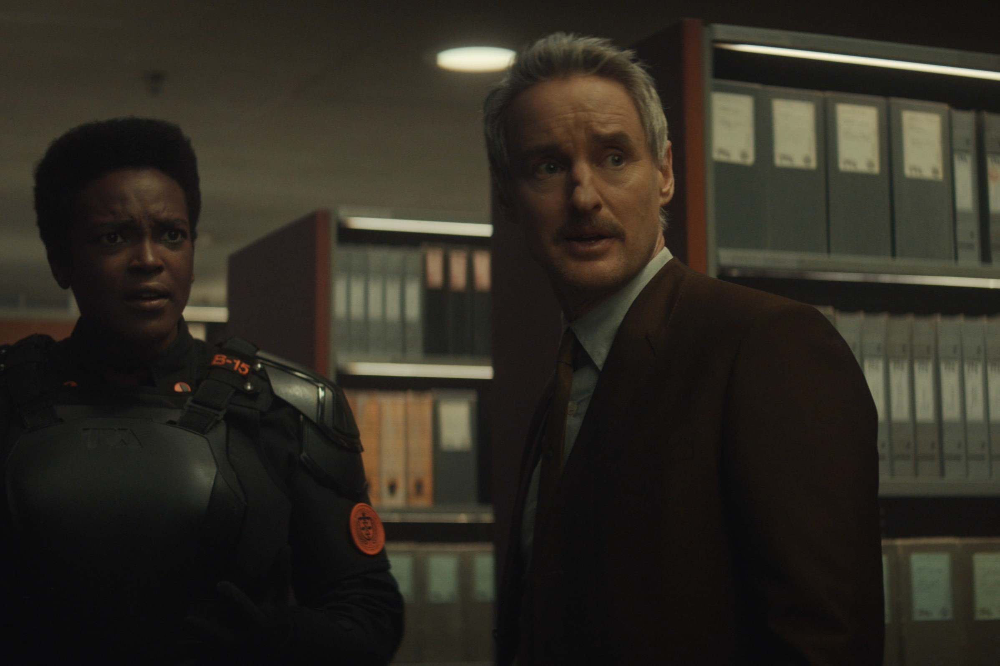
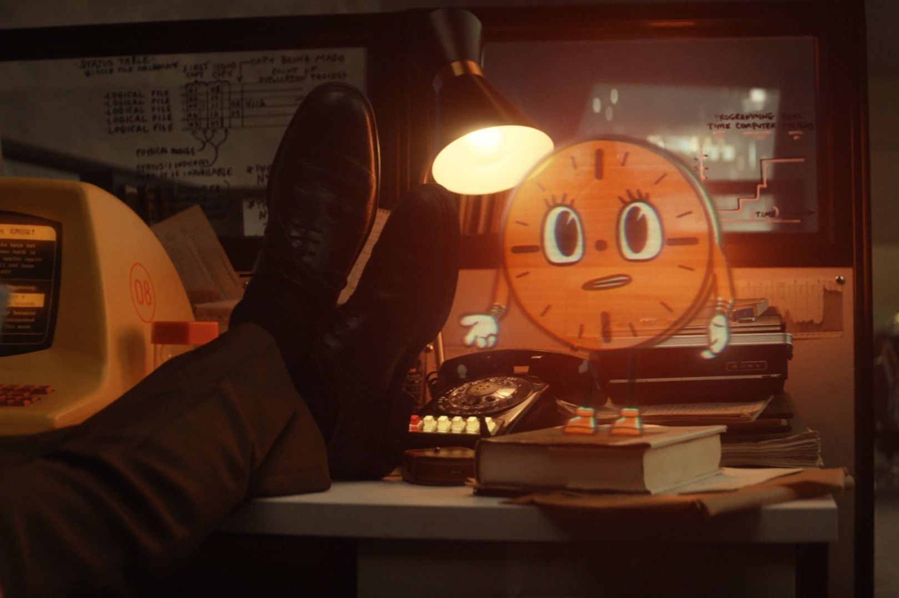
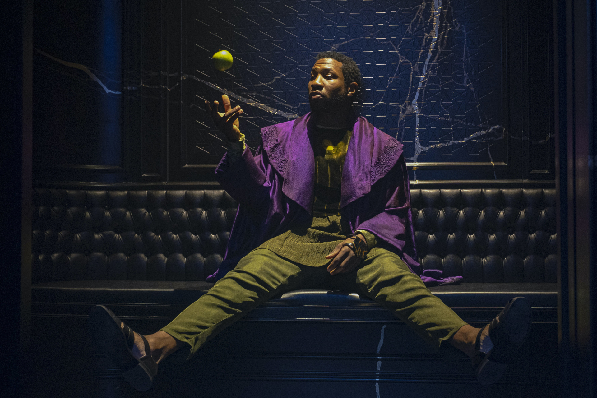
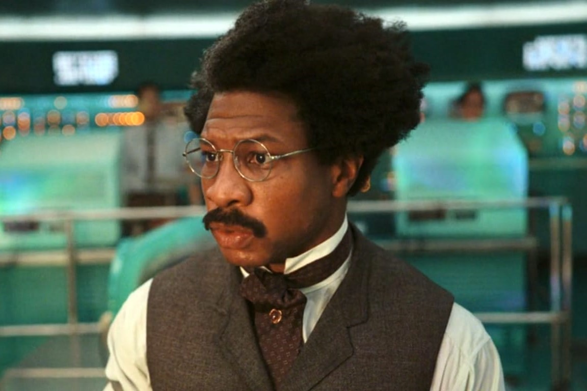

Mobius M. Mobius

Don es un vendedor de Piranha Powersports que se desvió de la Sagrada Línea del Tiempo, lo que provocó que Aquel Que Permanece lo secuestrara y le borrara la memoria. Ahora analista de la TVA llamado Mobius M. Mobius, se especializó en la investigación y el análisis de criminales del tiempo particularmente peligrosos y, finalmente, reclutó una variante de Loki para ayudar en la investigación de su variante Sylvie, que había estado atacando la TVA. Sin embargo, al enterarse de que le habían lavado el cerebro para que creyera las mentiras de la TVA, Mobius se alió con las variantes hasta que todos fueron podados por los Minuteros de Renslayer y enviados al Vacío. Mobius regresó a la TVA para enfrentarse a Renslayer y fue testigo de la fractura de la Sagrada Línea del Tiempo, ramificándose hacia el Multiverso.
Poco después, Mobius se involucraría en la misión de reparar el Telar Temporal. Esto le llevaría a localizar a Renslayer y Miss Minutes en 1893 y le llevaría al descubrimiento de Victor Timely, una variante. Necesitando su aura temporal para reparar el Telar, Mobius escoltó a Timely a la TVA. Sin embargo, Loki elegiría destruir el Telar por completo, sanando las ramas del tiempo a mano y tomando un trono en el Fin de los Tiempos. Con la libertad de elegir su propio futuro, Mobius decidió dejar la TVA y experimentar de primera mano lo que había estado protegiendo durante eones.
Sylvie Laufeydottir

Sylvie Laufeydottir, nacida como Loki Laufeydottir, es una variante de Loki Laufeyson que fue capturada por la TVA hasta que logró huir de su custodia. Sylvie creció ocultándose en los apocalipsis de miles de mundos, hasta que inició un plan para derrocar a la agencia, iniciando por pequeñas emboscadas a sus Minuteros. Su plan fue interrumpido, por lo que Sylvie activó las Cargas de Reseteo recolectadas para huir a la Oficina de la TVA y asesinar a los Guardianes del Tiempo.
Junto con Loki, Sylvie cayó en Lamentis-1, donde formaron una relación romántica. Eventualmente, ambos fueron capturados y llevados ante los Guardianes del Tiempo, descubriendo su farsa. Sylvie y Loki combatieron a Ravonna Renslayer, hasta que ésta última podó y envió a Loki al Vacío y haciendo que Sylvie decida auto-podarse para encontrar a Loki. Ambos derrotaron a Alioth y se enfrentaron a Aquel que Permanece. Sylvie envió a Loki a una TVA alternativa, mientras ella asesinó a Aquel que Permanece, liberando el Multiverso y a Kang.
Ravonna Renslayer

Rebecca Tourminet es una variante que fue capturada por Aquel Que Permanece y convertida en su aliada más cercana, llamada así Ravonna Lexus Renslayer. Cuando Aquel Que Permanece finalmente borró sus recuerdos, se convirtió en juez de la TVA. Renslayer condenó a Loki a ser podado, pero Mobius lo reclutó para cazar a Sylvie. Cuando el caso comenzó a desentrañar la verdad sobre la TVA, Renslayer se volvio en contra de Mobius, enviándolo a él y a Loki al Vacío. Cuando Mobius regresó e intentó derribar la TVA, Renslayer lo detuvo y se fue en busca de su propia libertad.
Guiada por Miss Minutes, Renslayer implementó el plan de Aquel Que Permanece para influir en su variante, Victor Timely, para que lo sustituyera. Mientras intentaba reclutar a un Timely adulto, se encontró con Loki y Mobius, antes de ser traicionada por Timely. Cuando Miss Minutes le reveló la verdad sobre Aquel Que Permanece, se desilusionó e intentó hacerse cargo de la TVA, mientras el Telar Temporal estaba a punto de implosionar. Con la ayuda del Cazador X-05, capturó a Timely y lo interrogó sobre su multiplicador de rendimiento. Sin embargo, Sylvie hechizó a X-05 y lo hizo enviar a Renslayer al Vacío, donde se enfrentó a Alioth.
Cazadora B-15

Cazadora B-15, nacida como Verity Willis, es una ex soldado de alto rango de la TVA. En una misión, capturó a Loki y formó parte de una alianza incómoda con él para encontrar otra variante de Loki. B-15 luego fue hechizada por Sylvie, lo que provocó que accediera a sus recuerdos borrados antes de la TVA. Cuando Sylvie ayudó a desenterrar todos sus recuerdos, B-15 fue en contra de la TVA y ayudó a exponer la verdad a todos los agentes.
Esto provocó una ruptura entre ella y el General Dox ya que B-15 sintió una gran simpatía por los seres vivos podados. Mientras tanto, luchó contra un levantamiento de Ravonna Renslayer y Miss Minutes, así como contra un Telar Temporal sobrecargado a medida que el Multiverso crecía. El Telar finalmente fue destruido por Loki, quien decidió hacer el trabajo del Telar, haciéndolo perder en el tiempo. Sin embargo, esto llevó a B-15 y la TVA por un mejor camino al permitir que el Multiverso creciera.
Miss Minutes

Miss Minutes es una inteligencia artificial creada por Aquel Que Permanece para observar y brindar ayuda a la Autoridad de Variación Temporal. Como mascota animada de la TVA, difundió la propaganda de la organización entre sus trabajadores y variantes, y al mismo tiempo sirvió como enlace entre Aquel Que Permanece y Ravonna Renslayer. Ouroboros la reprogramó para evitar que trabajara contra ellos y actualmente está ayudando a la TVA en su estado reiniciado.
Aquel Que Permanece

Nathaniel Richards fue un científico del siglo 31 que entró en contacto con universos paralelos y otras versiones de sí mismo. Cuando algunas de estas variantes intentaron conquistar otras realidades, se produjo una Guerra Multiversal, la cual él pudo finalizar con la ayuda de Alioth. Bajo el sobrenombre de Aquel Que Permanece, fundó y gobernó la Autoridad de Variación Temporal para preservar la Sagrada Línea del Tiempo y evitar el regreso de sus contrapartes. Residiendo en la Ciudadela al Final de Los Tiempos durante eones, Aquel Que Permanece planeó que Loki y Sylvie lo sustituyeran como líderes de la TVA, pero esta última lo mató, lo que resultó en la fractura del Multiverso y el regreso de sus variantes.
Ouroboros

A.D. Doug es un escritor y científico que se convirtió en una variante, provocando que fuera secuestrado por Aquel que Permanece para ser un agente de la Autoridad de Variación Temporal a cargo de la tecnología bajo el nombre Ouroboros. Pasando años trabajando en la TVA, Ouroboros recibió el apodo "O.B." y ayudó a Loki a lidiar con su desfase temporal mientras enfrentaban el problema del Telar Temporal para liberar el Multiverso.
Victor Timely

El profesor Victor Timely es un científico e inventor a quien Ravonna Renslayer y Miss Minutes le dieron una copia del Manual Oficial de la TVA cuando era niño, lo que le permitió inventar tecnología futurista que no pudo tener éxito por completo debido a los recursos limitados del Siglo 19. Durante su edad adulta, Renslayer y Miss Minutes lo volvieron a buscar, quienes lo iluminaron con conocimientos sobre la TVA y pretendían que él sustituyera a Aquel Que Permanece. Sin embargo, Timely pronto las traicionó a los dos, lo que llevó a que Loki lo llevara a las oficinas de la TVA para reparar un Telar Temporal completamente funcional. Después de innumerables intentos fallidos y muertes deshechas a través de desfases temporales, Timely fue testigo de cómo Loki destruía el Telar y reorganizaba el Multiverso para siempre, lo que le permitió vivir para ser coautor de una segunda edición del Manual Oficial de la TVA con Ouroboros.
Casey

Antes de que le dieran su nombre falso, Casey era una variante llamada Frank Lee Morris, quien fue secuestrado por Aquel Que Permanece quien borro su memoria para poder ser miembro de la Autoridad de Variación Temporal, una organización que protege la Sagrada Línea del Tiempo de otros tipos de variantes.